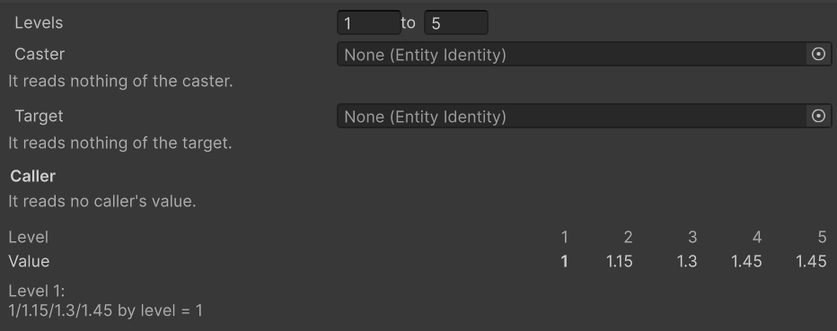

Try
A Scaler asset's inspector and a Value Pipeline's have a Try section, which reads the asset at each level of a range.
- The range is 1 to 5 to start.
- It reads against a stand-in caster and target, and the values a caller sets.
- Each value is typed, or filled from an Entity.
What's typed is kept for the session, never in the asset (Scalers: Scaler assets, Value Pipelines: Trying a pipeline).

A Scaler asset's Try section: its value at each level.
ScalerTry
ScalerTry does the same in code.
| Member | Description |
|---|---|
From, To |
The levels. |
Caster, Target |
Each a ScalerTry.Side, holding a ScalerTry.AttributeRow for each attribute a read asks of it. |
Caller |
A ScalerTry.CallerRow for each key. |
SetCaller, UnsetCaller |
Give a caller key, or take it. |
Read(scaler) |
Gives a ScalerTry.Reading: the value at each level, and the parts behind each. |
A side's attribute is given with Set, taken with Lack, or filled from an entity with FillFrom.
ValuePipelineTry
ValuePipelineTry puts a Value through a pipeline, against its Numbers, a ScalerTry. Its chances come up or miss as
ChancesComeUp says.
Read(pipeline) gives a ValuePipelineTry.Reading: a ValuePipelineTry.Run for each level. A run holds each stage's
step, what came out, and the stop that stopped the hit, where one did.